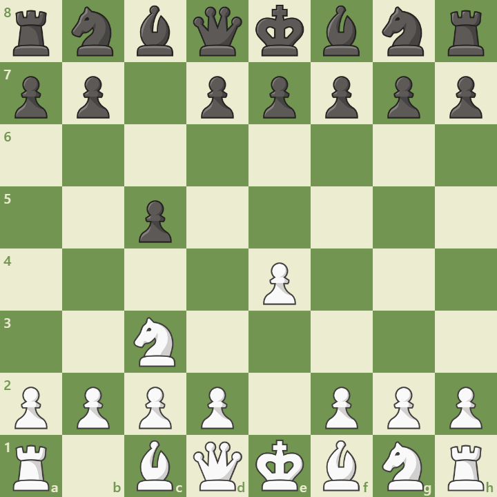

Overview
Anti-Sicilian Systems are alternatives to the Open Sicilian, designed to avoid deep theory and surprise opponents. They begin after:
1. e4 c5 2. Nc3 or 2. Nf3 followed by Bb5, c3, or f4
These systems offer flexibility and often lead to unique middlegames. They’re popular at all levels for their simplicity and effectiveness.
Opening Diagram
This position shows a typical Anti-Sicilian setup with 2.Nc3, preparing f4 or Bb5.
Main Variations
- Alapin Variation: 2.c3 – controls d4
- Grand Prix Attack: f4, Nc3, Bc4 – aggressive kingside play
- Moscow Variation: Bb5+ – early pressure
Strategic Themes
- Avoiding deep Sicilian theory
- Flexible pawn structures and piece play
- Ideal for surprise and practical chances